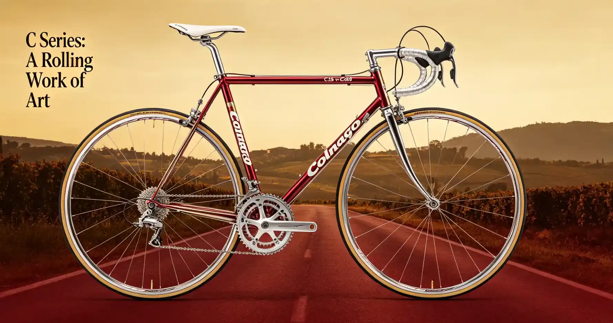

The saddle is the most personal contact point on a bicycle. Two riders of identical height and weight can have completely different sit bone widths, pelvic rotation angles, and soft tissue sensitivity, meaning the saddle your friend swears by could be your personal torture device. Yet most cyclists ride whatever saddle came on their bike, enduring numbness, chafing, and pain that they assume is just part of cycling. It is not. A properly fitting saddle transforms the riding experience from a chore you endure to a motion you enjoy. This guide covers how to measure your sit bones, how different saddle shapes affect comfort, the difference between men's and women's saddles, and specific recommendations across every price range.
My Saddle Odyssey: Seven Saddles in Five Years
When I bought my first road bike in 2015, it came with a 143mm-wide OEM saddle that caused numbness within 30 minutes. I assumed it was normal—all cyclists complained about saddle discomfort, right? I bought a Selle Italia SLR Superflow ($179) based on a magazine review. It was a 130mm-wide, carbon-railed race saddle with a large cutout. It was better, but after two hours, I still had perineal numbness. I then tried a Brooks B17 ($140), the legendary leather saddle that supposedly molds to your body. After 500 painful break-in miles, it was comfortable for casual riding but too heavy (520 grams) and wide for my road bike position. Next, I tried a Specialized Power Expert ($160), a short-nosed saddle with a wide cutout that was becoming ubiquitous at local races. It was the best yet—I could ride three hours without numbness. But after a bike fit at a professional studio in Chicago ($275 for the full session), the fitter measured my sit bones at 115mm and recommended a 143mm version of the Power saddle—wider than I had been using. The difference was dramatic. I had been riding saddles that were too narrow, causing my sit bones to hang off the edges and putting pressure on soft tissue. The lesson: width matters more than any other feature, and you cannot guess your width—you must measure it.
How to Measure Your Sit Bone Width
Your sit bones (ischial tuberosities) are the two bony protrusions at the bottom of your pelvis. When you sit on a saddle, these bones should support most of your weight. The saddle should be wide enough that your sit bones rest on the padded wings, not hang off the sides. The standard measurement method uses a piece of corrugated cardboard or a memory foam pad. Place the cardboard on a hard, flat surface (a low stool or step), sit on it in your cycling position (leaning forward at roughly the angle you ride), and lift your feet to apply full body weight. After 30 seconds, stand up and measure the distance between the centers of the two depressions. Add 20-30mm to this measurement to determine your ideal saddle width. For example, if your sit bones measure 115mm apart, you need a 135-145mm saddle. Most bike shops offer this measurement for free or for a small fee ($10-$20). Specialized dealers have a digital "Assometer" tool that provides a precise measurement. The alternative is the "wet test": sit on a paper towel on a hard surface with wet swimsuit bottoms, and measure the distance between the wet spots. Less precise but directionally accurate.
Saddle Shape: Flat vs Curved, Short vs Long
Saddle shape is the second most important factor after width. Saddles fall into three profile categories: flat (the saddle is level from back to front), curved (the saddle has a continuous upward curve from back to front), and waved (the saddle has a raised tail, a dip in the middle, and a raised nose). Flat saddles, like the Fizik Arione ($139), work well for riders with flexible hips who rotate their pelvis forward and move around on the saddle. Curved saddles, like the Selle Italia Flite ($129), suit riders with less pelvic rotation who stay in one position. Waved saddles, like the Specialized Power ($160), are designed to lock the rider into a specific position and are very popular among riders who prefer a consistent, aggressive position. Short-nosed saddles (like the Specialized Power, Pro Stealth, and Fizik Vento Argo) have become the dominant trend in road cycling. By shortening the nose by 30-40mm, they reduce pressure on soft tissue and allow a more aggressive forward position without discomfort. The Specialized Power measures 240mm long versus a traditional 275mm saddle. The trade-off is fewer hand positions and less room to slide forward and backward—they are designed for a single, aero position.
Cutouts and Channels: Not Just Marketing
Cutouts and relief channels are the most visible feature of modern saddles, and they are not just marketing. A 2016 study published in the Journal of Sexual Medicine found that perineal pressure is significantly reduced by saddles with a full cutout, and that prolonged pressure is associated with numbness and erectile dysfunction in male cyclists. The Specialized Power's cutout is one of the widest and deepest in the industry. The Pro Stealth uses a more subtle channel rather than a full cutout, which some riders find more comfortable because the edges of a cutout can create pressure points. The Selle SMP TRK Gel ($89) uses a distinctive dropped-nose design with a large central channel that completely eliminates perineal contact. For women, cutouts are equally important but for different anatomical reasons. Women's saddles from brands like Terry and Selle Italia Diva are wider in the rear, shorter in the nose, and have a larger central cutout to accommodate wider sit bones and different soft tissue anatomy. The Specialized Mimic technology, used in the Power Expert with Mimic ($160), uses a multi-layer foam that mimics the behavior of soft tissue, reducing pressure in sensitive areas without the hard edges of a traditional cutout.
Saddle Comparison Table
| Saddle | Price | Width Options | Weight | Shape | Cutout | Best For |
|---|---|---|---|---|---|---|
| Specialized Power Expert | $160 | 143mm, 155mm, 168mm | 235g | Short-nose, waved | Full cutout | Road, aggressive position |
| Fizik Vento Argo R3 | $149 | 140mm, 150mm | 225g | Short-nose, curved | Full channel | Road, gravel, endurance |
| Pro Stealth Performance | $130 | 142mm, 152mm | 205g | Short-nose, flat | Channel | Road, time trial |
| Selle Italia SLR Boost | $179 | 130mm, 145mm | 185g | Short-nose, curved | Full cutout | Lightweight, racing |
| Brooks B17 | $140 | 170mm (standard) | 520g | Long-nose, flat | None | Touring, commuting |
| Ergon SR Pro | $119 | S/M (130-150mm), M/L (150-170mm) | 260g | Long-nose, waved | Full cutout | Touring, recreational |
| Selle SMP TRK Gel | $89 | 160mm | 395g | Long-nose, dropped | Full channel | Comfort, commuting |
Who This Is For (And Who It's Not)
Best for Specialized Power: Road cyclists and racers who ride in an aggressive, forward-rotated position. The short nose and wide cutout are optimal for riders who spend most of their time in the drops or on the hoods with a flat back. The multiple width options (143, 155, 168mm) accommodate nearly every sit bone measurement.
Not ideal for Specialized Power: Riders who change positions frequently on long rides, tourers who sit upright, or anyone who finds the "locked-in" feel of a waved saddle restrictive. The short nose also limits the ability to scoot forward for steep climbs.
Best for Brooks B17: Touring cyclists, commuters, and recreational riders who prioritize all-day comfort over weight and performance. The leather construction molds to your anatomy over time, creating a custom fit. The B17 is legendary for a reason—it has been in production since 1898.
Not ideal for Brooks B17: Road racers and weight-conscious riders. At 520 grams, it is more than double the weight of a performance saddle. It also requires a break-in period (200-500 miles) and periodic maintenance with Proofide leather conditioner.
Best for Selle SMP TRK Gel: Riders with chronic saddle discomfort, prostate issues, or anyone who has tried multiple saddles and still experiences numbness. The radical dropped nose and deep channel provide the most aggressive perineal relief of any saddle on the market.